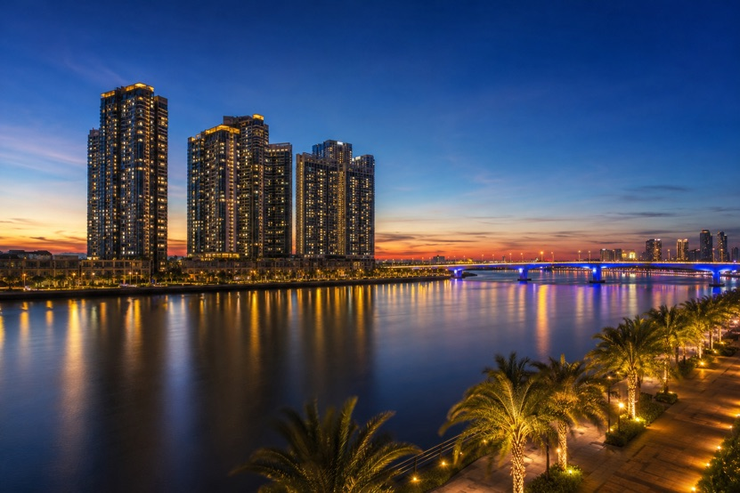
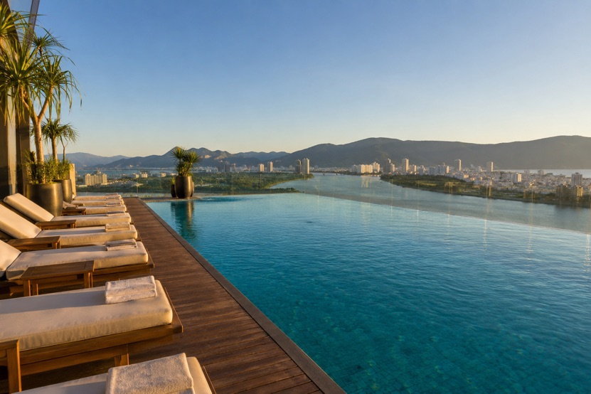

Renting guides
What Are the Best Luxury Apartment Buildings in Da Nang?
Bài viết này hiện chỉ có bản tiếng Anh. Menu và phần điều hướng đã chuyển sang tiếng Việt. Alice nói tiếng Việt và tiếng Anh, nhắn tin cho cô nếu bạn cần giải thích bằng tiếng Việt.
Key takeaways
- Da Nang's high end apartment market clusters in three places: the Han River in the centre, the My Khe beachfront, and the growing southern districts.
- The Filmore and Azura are the two established river towers. Azura has been the riverfront benchmark since 2012, and The Filmore is the newest addition, completed in 2024.
- Wyndham Soleil is the tallest residential complex in the city and sits directly across from the beach.
- The building matters less than the location around it. The same apartment feels completely different depending on whether you step out onto a river promenade, a beach road, or a quiet southern street.
Da Nang's luxury apartment buildings compared
Seven buildings come up again and again when people ask me where the good apartments are. They split cleanly into three settings: the Han River in the centre, the beachfront strip on the Son Tra side, and the newer southern districts. This table is the shortlist I start from before we book anything.

| Building | Area | Setting | Views | Best suited to |
|---|---|---|---|---|
| The Filmore | Bach Dang, city centre | Riverfront, between the two bridges | Han River, Dragon Bridge, city | Executives, professional couples, design led renters |
| Azura | Tran Hung Dao, east bank | Directly on the river bank | Han River, city, Son Tra mountain | Long term residents who want the central location |
| Wyndham Soleil | Vo Nguyen Giap, My Khe | Across the road from the beach | Ocean, coastline, mountains | Beach first living with hotel standard facilities |
| Hiyori Garden Tower | Near My Khe Beach | Residential, short walk to sand | Sea and city, depending on side | Professionals and long term residents |
| Alphanam Luxury Apartment | Coastal Son Tra side | Close to the beach and coast road | Ocean and coastline | Beachfront high rise living |
| Sun Cosmo Residence | Southern Da Nang | Near the river and the coast | River and coastal outlook | Newer building, easy beach and southern access |
| FPT Plaza | Southern urban area | Established residential community | Neighbourhood and city | Professionals working in the southern tech and education district |
For what any of these actually costs per month, the luxury rental price guide has the ranges by apartment size, along with what moves a unit up or down within a single building.
Central Da Nang and the Han River
The river is where the city's centre of gravity sits. Living here means the promenade, the bridges, the restaurants along Bach Dang, and Han Market a few minutes away.
The Filmore Da Nang
The newest of the city's landmark residential buildings, completed in 2024 on Bach Dang Street between the Dragon Bridge and the Tran Thi Ly Bridge. It holds 206 apartments across 25 floors, which is a small number by local standards and gives the building an unusually quiet, private feel.
Facilities include a rooftop pool overlooking the river, a gym, a sauna, concierge and three levels of basement parking. The interiors are among the strongest in the city, with floor to ceiling glazing on the river side and layouts that put the living space against the water.
It suits executives, business owners and professional couples, and the airport being about ten minutes away makes it particularly good for anyone who travels for work.
Azura Da Nang
Azura has been the riverfront benchmark since 2012. Ask most long term expats where the best located building in the city is and this is the name that comes back. It stands 34 floors above the east bank at 339 Tran Hung Dao, between the Han River Bridge and the Dragon Bridge.
The tower holds 225 apartments plus two penthouses, with around seven units per floor and layouts ranging from compact one bedrooms up to very large duplexes and penthouses. There is a 25 metre outdoor pool, a gym, a staffed front desk, a mini mart and a children's play area.
What people stay for is the position. Vincom Plaza is a five minute walk, the river promenade is at the door, and the building has arguably the best residential view of the Dragon Bridge fire show and the annual fireworks festival anywhere in Da Nang.
My Khe Beach and the Son Tra side
The coastal strip is where people go when the sea is the point. Mornings start on the sand, and the beach road runs the length of the city.

Wyndham Soleil Da Nang
The tallest residential complex in Da Nang, at the beachfront intersection of Vo Nguyen Giap and Pham Van Dong. Designed by Aedas and developed by PPC An Thinh, it comprises four towers rising to around 50 to 57 floors, with the design drawn from ocean waves and the towers linked by a sky bridge.
Living here means hotel standard infrastructure as your daily normal. A large infinity pool, a pool bar, a retail podium downstairs, and My Khe Beach across the road. Management runs to hotel standards around the clock, which is a real advantage over independently run buildings.
The height is the other draw. Upper floors get the coastline, the city and the Son Tra mountains in a single view, and sunrise over the water from a high floor is something residents talk about for a long time.
Hiyori Garden Tower
A modern tower a short distance from My Khe Beach, popular with professionals and long term residents who want a contemporary apartment within reach of the sea without being on the tourist strip itself.
Alphanam Luxury Apartment
High rise living close to the beach on the coastal Son Tra side, with direct access to the main coastal road and the beaches along it.
Ngu Hanh Son and southern Da Nang
The south is where the city is still growing. Wider streets, newer buildings, and a calmer pace, with the beach and the centre both reachable in a short ride.
Sun Cosmo Residence
A newer development in southern Da Nang near the river and the coast, offering modern apartments with straightforward access to My Khe Beach and the Ngu Hanh Son area.
FPT Plaza
Modern apartment living in an established residential community in the southern urban area. It is a practical choice rather than a luxury one, and it is genuinely well suited to professionals working in the nearby technology and education district, who can be at the office in minutes.
Why are these buildings popular?
They tend to combine the same set of things:

- Prime positions on the river, the beachfront or in growing southern districts
- River or sea views, which are the single most requested feature in this city
- Modern architecture and contemporary interiors
- Swimming pools and fitness facilities on site
- Security and professional building management
- Restaurants, cafes, beaches and business districts within easy reach
Professional management deserves particular mention. In a city where many buildings are run informally, having a front desk that answers, maintenance that arrives and a building that is properly looked after changes daily life more than any single feature inside the apartment.
What should you compare before choosing?
The apartment itself is only part of the decision. The things that shape how a place actually feels to live in are usually outside the front door.
The neighbourhood you step into. A river promenade, a beach road and a quiet southern street produce three completely different daily lives from the same floor plan.
Distance to what you use. Not the city centre in the abstract, but your office, your gym, your school run, the airport if you travel.
Which way the apartment faces. Aspect matters here. A river or sea view is worth a great deal, and so is avoiding the full afternoon sun on a west facing wall in July.
The floor. Height buys view, quiet and breeze, and the difference between a low floor and a high one in the same building is larger than people expect.
What the lease includes. Management fee, wifi, parking and facility access vary from owner to owner even inside the same building, so it is worth having all of it written down.
Choosing an apartment in Da Nang is really choosing a lifestyle. The floor plan is the smallest part of that decision.
Frequently asked questions
What are the best luxury apartment buildings in Da Nang?
The most notable are The Filmore and Azura on the Han River, Wyndham Soleil, Hiyori Garden Tower and Alphanam near My Khe Beach, and Sun Cosmo Residence and FPT Plaza in southern Da Nang. They differ mainly by setting, with river, beachfront and southern residential each offering a distinct daily life.
What is the tallest residential building in Da Nang?
Wyndham Soleil Da Nang is the tallest residential complex in the city, with four towers rising to roughly 50 to 57 floors at the beachfront intersection of Vo Nguyen Giap and Pham Van Dong. It was designed by Aedas and developed by PPC An Thinh.
Which Da Nang apartment building has the best location?
Many long term residents name Azura, which sits directly on the east bank of the Han River at 339 Tran Hung Dao between two bridges, within walking distance of Vincom Plaza, the promenade and dozens of restaurants. The Filmore, further along the riverfront on Bach Dang, is the newest building in a comparable position.
What is The Filmore Da Nang?
The Filmore is a 25 storey luxury residential tower on Bach Dang Street in central Da Nang, completed in 2024 with 206 apartments. It offers a rooftop pool over the Han River, a gym, a sauna, concierge service and basement parking, and its low unit count keeps the building quiet.
Can foreigners rent luxury apartments in Da Nang?
Yes. Foreigners can rent any residential property in Vietnam with a valid passport and visa, including a tourist visa, and no work permit is required. The landlord is responsible for registering the tenant for temporary residence with the local police.
Are luxury apartments in Da Nang near the beach?
Several are directly beachfront, including Wyndham Soleil and Alphanam on the coastal road, while Hiyori Garden Tower sits a short distance back from My Khe. The Han River buildings such as Azura and The Filmore are central rather than beachfront, with the beach around a 7 to 10 minute drive.
Which area of Da Nang is best for luxury apartments?
The Han River in the centre suits people who want restaurants, the promenade and short commutes. The My Khe beachfront suits those who want the sea as part of daily life. Southern Da Nang suits people who prefer newer buildings, more space and a quieter setting.
Do luxury apartments in Da Nang include facilities in the rent?
It varies by owner rather than by building. Management fees, wifi, parking and access to pools and gyms are included in some leases and charged separately in others, even within the same building, so confirm what is covered before signing.